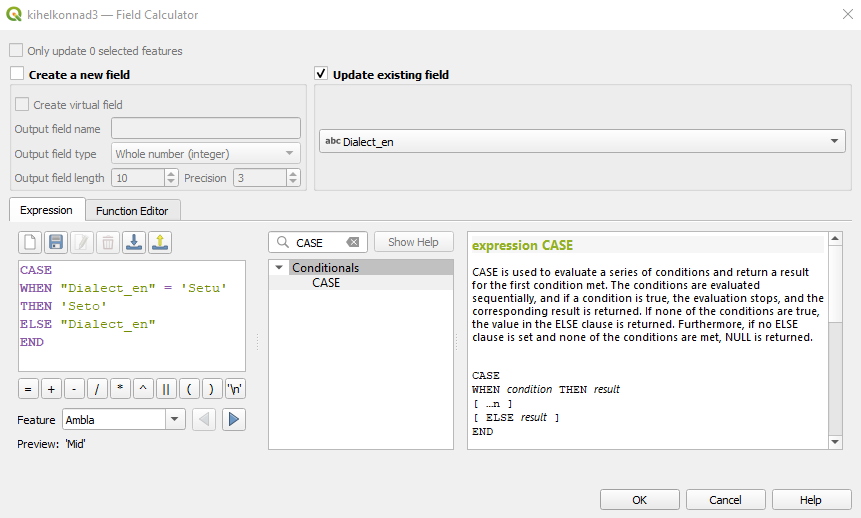

Praktikum 10 Avaldised ja päringud
Impordime tänaseks praktikumiks esmalt QGISi
- kihelkondade shapefile’i (EKI, Peeter Päll),
- shapefile’i, mis sisaldab andmeid ei ole ja pole eituskonstruktsioonide leviku kohta eesti murretes Andrus Saareste 1955. aasta “Väikese Eesti murdeatlase” põhjal,
- CSV-faili, mis sisaldab andmeid ei ole ja pole suhtelisest sagedusest Eesti murrete korpuses. NB! Kodeering on UTF-8, välju eraldab semikoolon, esimesel real on tulbanimed ning koordinaatide infot failis ei ole.
Figure 10.1: Lisatud kihid
Kui soovid võrrelda, kuidas EKI kihelkondade kaart klapib Maa-ameti kihelkondade kaardiga, võid taustaks panna veel WMS-i või WFS-i kaudu Maa-ameti ajaloolise haldusjaotuse kaardi: https://teenus.maaamet.ee/ows/wms-ajalooline-haldus?.
10.1 Avaldised
Avaldised (expressions) on tehted ja vormelid, mille abil hõlpsalt muuta atribuutide väärtusi, luua uusi (virtuaalseid) atribuute või kihte, andmetest alamhulki välja filtreerida, teha statistikat jne. Avaldiste abil saab andmeid QGISis mitmekülgsemalt analüüsida ning visualiseerida.
Avaldisi saab QGISis kasutada mitmes kohas, näiteks
- objektide valimiseks Select Features by Expression tööriista abil,
- objektide valimiseks atribuuttabeli alumisest vasakust nurgast Advanced Filter (Expression),
- atribuutide muutmiseks ja lisamiseks Field calculator’is,
- päringute tegemiseks Query builder’is,
- päringute tegemiseks Database Manager’is,
- sümbolite, siltide või paigutuse parameetrite muutmisel (Symbology -> Rule-based),
- jne.


Figure 10.2: Avaldised 1) Select Features by Expression, 2) Advanced Filter (Expression), 3) Field Calculator, 4) Query Builder, 5) DB Manager, 6) Rule-based symbology
Avaldisi saab eeldefineeritud funktsioonide abil koostada niisiis mitmeks erinevaks otstarbeks, vaata ülevaadet siit. Sealjuures saab sageli üht ja sama asja teha erineval moel.
Oleme juba kokku puutunud lihtsate avaldistega, kui
- filtreerisime aadressiandmete andmestikust välja ainult eluruumid:
"ADOB_LIIK" = 'ER'; - tegime tekstina sisse loetud arvude tulbast arvulise tunnuse:
"VAARTUS"; - arvutasime digiteeritud polügoonide pindala:
round($area / 10000, 2).
Vaatame sel korral ülesannete toel lähemalt operaatoreid (Operators), matemaatilisi funktsioone (Math), tingimuslauseid (Conditionals) ning teksti muutmise võimalusi (String).
10.1.1 Harjutused
- Kasutame valiku tööriista (Select Features by Expression), et teha aktiivseks kõik need kihelkondade polügoonid, millel on midagi kirjutatud tulpa Problem (nt selleks, et hakata parandustega tegelema).
- Kõikide atribuutide/tulpade nimed ja tüübid saab kätte jaotusest Fields and Values. Nupp All Unique näitab atribuudi kõiki eri väärtuseid, nupp 10 Samples sellest kuni kümmet esimest eri väärtust. Topeltklikk atribuudi nimel liigutab atribuudi jutumärkide vahel vasakul asuvasse avaldise kasti.
- Jaotuse Operators alt leiame terve hulga sümboleid, mille abil teha nt arvutustehteid, võrdlustehteid või tekstitöötlust, sh vajamineva operaatori IS NOT.
- Tahame leida niisiis atribuuttabelist neid ridu, kus tulp Problem ei ole tühi:
"Problem" IS NOT NULL.
- Kõikide atribuutide/tulpade nimed ja tüübid saab kätte jaotusest Fields and Values. Nupp All Unique näitab atribuudi kõiki eri väärtuseid, nupp 10 Samples sellest kuni kümmet esimest eri väärtust. Topeltklikk atribuudi nimel liigutab atribuudi jutumärkide vahel vasakul asuvasse avaldise kasti.
Figure 10.3: Probleemsed kihelkonnad
- Kasutame tööriista Field Calculator, et lisada ei ole/pole atlase levikuandmetesse virtuaalne (st ajutine) atribuut nimega saj19, kus oleks väärtus “jah” ridadel, kus keelejuhi sünniaeg on väiksem kui aasta 1900, “ei”, kui keelejuhi sünniaeg on hilisem, ja “ei tea”, kui keelejuhi sünniaega pole märgitud.
- Siin läheb vaja tingimuslauseid jaotuses Conditionals. Kasutame siin funktsiooni if, mille järel sulgude sees komadega eraldatult tuleb anda esmalt tingimus (“Kas tulbas SaKJSynd olev arv on väiksem kui 1900?”), seejärel väärtus juhul, kui tingimus vastab tõele, ning lõpuks väärtus juhul, kui tingimus ei vasta tõele:
if("SaKJSynd" < 1900, 'jah', 'ei').
- Meil on aga atribuuttabelis ka sellised read, kus keelejuhi sünniaeg võrdub 0-ga või on NULL, sest see pole teada. Meil oleks oluline märkida ära, et nende puhul me tegelikult sünniaega hinnata ei oska:
if("SaKJSynd" IS 0 OR "SaKJSynd" IS NULL, 'ei tea', if("SaKJSynd" < 1900, 'jah', 'ei')):- Kui tulbas “SaKJSynd” on väärtus 0 VÕI polegi midagi (NULL),
- märgi tulpa “saj19” väärtus ei tea,
- vastasel juhul
- kui tulbas “SaKJSynd” on väärtus, mis on väiksem kui 1900,
- märgi tulpa “saj19” väärtus jah,
- vastasel juhul väärtus ei.
- Siin läheb vaja tingimuslauseid jaotuses Conditionals. Kasutame siin funktsiooni if, mille järel sulgude sees komadega eraldatult tuleb anda esmalt tingimus (“Kas tulbas SaKJSynd olev arv on väiksem kui 1900?”), seejärel väärtus juhul, kui tingimus vastab tõele, ning lõpuks väärtus juhul, kui tingimus ei vasta tõele:
Figure 10.4: Uue tulba tekitamine
- Värvime kihelkonnad selle järgi, kui mitu tähte nende nimes on.
- Valime kihelkondade kihi Symbology alt Graduated ja Value puhul ühe konkreetse tunnuse nime valiku asemel vajutame lahtri kõrval olevat avaldise sümboliga nuppu.
- Teksti/sõne pikkuse leidmiseks on jaotuse String all funktsioon length:
length("Name").
- Lisame ka sildid, et kontrollida, kas värvilegend peab paika.
- Valime kihelkondade kihi Symbology alt Graduated ja Value puhul ühe konkreetse tunnuse nime valiku asemel vajutame lahtri kõrval olevat avaldise sümboliga nuppu.
Figure 10.5: Kihelkonnad vastavalt nende nimede pikkusele
- Toome värvi ja/või sümboliga esile ainult need “ei ole”-“pole” andmestiku punktid, mille asustusüksuse nime lõpus või alguses on Jõe-/-jõe või Järve-/-järve. Teised punktid värvime halliks ja teeme läbipaistvamaks. Need punktid, millel asulanime atribuuttabelis ei ole, jätame jooniselt välja.
- Asendame esmalt ő-sümbolid tulbas “ANIMI” õ-tähtedega:
- Selleks saame Field Calculator’is uuendada olemasolevat atribuuti “ANIMI” (Update existing field) regulaaravaldise abil (String -> regexp_replace):
regexp_replace("ANIMI", 'ő', 'õ').
- Selleks saame Field Calculator’is uuendada olemasolevat atribuuti “ANIMI” (Update existing field) regulaaravaldise abil (String -> regexp_replace):
- Valime nüüd punktide kihi Symbology alt Categorized ja Value puhul vajutame jälle avaldise sümboliga nuppu.
- Saame kasutada näiteks operaatorit ILIKE:
"ANIMI" ILIKE 'Jõe%' OR "ANIMI" ILIKE '%jõe' OR "ANIMI" ILIKE '%jõe %' OR "ANIMI" ILIKE 'Järve%' OR "ANIMI" ILIKE '%järve' OR "ANIMI" ILIKE '%järve %'.
- Lisame sama avaldist kasutades ka sildid ainult kollastele punktidele:
if("ANIMI" ILIKE 'Jõe%' OR "ANIMI" ILIKE '%jõe' OR "ANIMI" ILIKE '%jõe %' OR "ANIMI" ILIKE 'Järve%' OR "ANIMI" ILIKE '%järve' OR "ANIMI" ILIKE '%järve %', "ANIMI", NULL).
- Võime lisada alla veel Maa-ameti WMS-teenusest värvilise reljeefvarjutuse, et vaadata, kas leitud kohanimed ka päriselt veekogude ääres on.
- Asendame esmalt ő-sümbolid tulbas “ANIMI” õ-tähtedega:
Figure 10.6: Jõe- ja järvenimelised asulanimed
10.2 Päringud
Lisaks eeldefineeritud funktsioonidele saab kasutada ka SQL-i päringuid, näiteks:
- Ridade ja tulpade valimine
- SELECT tulp FROM andmestik;
- vali andmestikust ainult üks tulp
- vali andmestikust ainult üks tulp
- SELECT tulp1, tulp2 FROM andmestik;
- vali andmestikust kaks tulpa
- vali andmestikust kaks tulpa
- SELECT DISTINCT tulp FROM andmestik;
- vali andmestikust tulba unikaalsed väärtused
- vali andmestikust tulba unikaalsed väärtused
- SELECT * FROM andmestik;
- vali andmestikust kõik read ja tulbad
- vali andmestikust kõik read ja tulbad
- SELECT * FROM andmestik WHERE tulp = ‘Mingi väärtus’;
- vali andmestikust kõik tulbad ja read, kus tulbas ‘tulp’ on väärtus ‘Mingi väärtus’
- vali andmestikust kõik tulbad ja read, kus tulbas ‘tulp’ on väärtus ‘Mingi väärtus’
- SELECT tulp1, tulp2 FROM andmestik WHERE tulp1 > 50 AND tulp2 ILIKE ‘%St%’;
- vali andmestikust tulbad ‘tulp1’ ja ‘tulp2’ ning ainult sellised read, kus tulp1 väärtused on suuremad kui 50 ja kus tulp2s on lahtris kuskil tähejärjend ‘St’
- SELECT tulp FROM andmestik;
- Muutmine
- UPDATE andmestik SET tulp = ‘Mingi uus väärtus’ WHERE tulp = ‘Mingi vana väärtus’;
- uuenda andmestikku nii, et sea tulba ‘tulp’ väärtuseks ‘Mingi uus väärtus’ nendel ridadel, kus tulba ‘tulp’ väärtus on praegu ‘Mingi vana väärtus’
- UPDATE andmestik SET tulp = ‘Mingi uus väärtus’ WHERE id = 8;
- uuenda andmestikku nii, et sea tulba ‘tulp’ väärtuseks ‘Mingi uus väärtus’ sellel real, kus id väärtus on 8
- UPDATE andmestik SET tulp = ‘Mingi uus väärtus’ WHERE tulp = ‘Mingi vana väärtus’;
- Lisamine
- INSERT INTO andmestik (tulp1, tulp2, tulp3, tulp4) VALUES (‘tulp1 väärtus’, ‘tulp2 väärtus’, ‘tulp3 väärtus’, ‘tulp4 väärtus’);
- sisesta andmestikku üks rida, kus tulpadesse ‘tulp1’, ‘tulp2’, ‘tulp3’ ja ‘tulp4’ lähevad vastavalt väärtused ‘tulp1 väärtus’, ‘tulp2 väärtus’, ‘tulp3 väärtus’ ja ‘tulp4 väärtus’
- sisesta andmestikku üks rida, kus tulpadesse ‘tulp1’, ‘tulp2’, ‘tulp3’ ja ‘tulp4’ lähevad vastavalt väärtused ‘tulp1 väärtus’, ‘tulp2 väärtus’, ‘tulp3 väärtus’ ja ‘tulp4 väärtus’
- INSERT INTO andmestik (tulp1, tulp2, tulp3, tulp4) VALUES (‘tulp1 väärtus’, ‘tulp2 väärtus’, ‘tulp3 väärtus’, ‘tulp4 väärtus’);
- Kustutamine
- DELETE FROM andmestik WHERE tulp = ‘Mingi väärtus’;
- kustuta andmestikust read, kus tulbas ‘tulp’ on väärtus ‘Mingi väärtus’
- kustuta andmestikust read, kus tulbas ‘tulp’ on väärtus ‘Mingi väärtus’
- DELETE FROM andmestik WHERE tulp = ‘Mingi väärtus’;
- Järjestamine
- SELECT tulp1, tulp2, tulp3 FROM andmestik ORDER BY tulp1;
- vali andmestikust ainult tulbad ‘tulp1’, ‘tulp2’ ja ‘tulp3’ ning järjesta uus andmestik ‘tulp1’ väärtuste järgi (vaikimisi väiksemast suuremani või A-st Z-ni)
- vali andmestikust ainult tulbad ‘tulp1’, ‘tulp2’ ja ‘tulp3’ ning järjesta uus andmestik ‘tulp1’ väärtuste järgi (vaikimisi väiksemast suuremani või A-st Z-ni)
- SELECT tulp1, tulp2, tulp3 FROM andmestik ORDER BY tulp1, tulp2;
- vali andmestikust ainult tulbad ‘tulp1’, ‘tulp2’ ja ‘tulp3’ ning järjesta uus andmestik ‘tulp1’ ning siis ‘tulp2’ väärtuste järgi
- vali andmestikust ainult tulbad ‘tulp1’, ‘tulp2’ ja ‘tulp3’ ning järjesta uus andmestik ‘tulp1’ ning siis ‘tulp2’ väärtuste järgi
- SELECT tulp1, tulp2, tulp3 FROM andmestik ORDER BY tulp1;
- Grupeerimine
- SELECT tulp1, tulp2 FROM andmestik GROUP BY tulp1;
- vali andmestikust tulbad ‘tulp1’ ja ‘tulp2’ ning grupeeri andmed ‘tulp1’ unikaalsete väärtuste järgi
- SELECT tulp1, tulp2 FROM andmestik WHERE tulp1 = ‘Mingi väärtus’ GROUP BY tulp2;
- vali andmestikust tulbad ‘tulp1’ ja ‘tulp2’ ning ainult read, kus tulbal ‘tulp1’ on väärtused ‘Mingi väärtus’, grupeeri saadud tabel ‘tulp2’ unikaalsete väärtuste järgi
- SELECT tulp1, tulp2 FROM andmestik GROUP BY tulp1;
Põhimõtteliselt on selline SQLi päringusüsteem kõikide filtreerimiste, kihtide loomiste, muutmiste, suure osa operaatorite, funktsioonide jm taustal. QGIS paneb ise päringud SQLi keelde.
10.2.1 Harjutused
SQL-i päringuid saab QGISis teha nt DB Manager’i tööriistaga. Mõned SQL-i funktsioonid (nt UPDATE) töötavad ainult “päris” andmebaasiformaatidega, nt GeoPackage’i failidega (kui need on ka GeoPackage’ina sisse loetud, mitte lihtsalt vektorfaildena).
- Valime kihelkondade andmestikust ainult eestikeelse murrete nimede tulba ja salvestame selle eraldi kihil.
SELECT ... FROM ...;- Kui tahame uuele kihile saada kaasa ka polügoonide andmeid, peame valima ka geomeetria:
SELECT ..., geometry FROM ...;
- Valime kihelkondade andmestikust kõik tulbad, aga ainult need Võru murde kihelkonna andmed, kus kihelkonna pindala on suurem kui kõikide eesti kihelkondade keskmine pindala.
SELECT ... FROM ... WHERE ... = '...' AND ... > (SELECT AVG(...) FROM ...);
- Leiame murdealade kogupindalad.
SELECT ..., ... FROM ... GROUP BY ...;
10.3 Ülesanne 1: “ei ole”/“pole” suhtelised sagedused
Värvime kihelkondade polügoonid selle põhjal, kui palju neis kasutatakse murdekorpuse andmete põhjal protsentuaalselt eituse varianti ei ole (vs. pole). Need suhtelised sagedused on tabelis eiole_pole_mk_props.csv, aga selle tabeliga ei ole seotud mingeid koordinaate. Peame niisiis ühendama tabeli mingi tunnuse alusel (nt kihelkondade nimede järgi) olemasolevate ruumiandmetega.
- Tee koopia kihelkondade kihist (nimeta see nt kihelkonnad2).
- paremklikk kihelkondade kihil -> Duplicate Layer,
- paremklikk kihil kihelkonnad copy -> Rename Layer,
- salvesta kiht uue shapefile’ina, et mitte olemasolevaid andmeid üle kirjutada.
- Ühenda andmestik eiole_pole_mk_props kihiga kihelkonnad2. Esmalt kontrolli, kas ühendamine võiks üldse korralikult õnnestuda, st kas mõlemas kihis viidatakse samadele kihelkondadele ühtmoodi. Selleks, et leida kihelkonnad/murrakud, mis on kahele kihile ühised, saab kasutada SQLi päringut
SELECT Murrak FROM eiole_pole_mk_props INTERSECT SELECT Parish_id FROM kihelkonnad2;. Selleks, et leida aga kihelkonnad, mida teises andmestikus ei ole, võib kasutada päringutSELECT Murrak FROM eiole_pole_mk_props EXCEPT SELECT Parish_id FROM kihelkonnad2;. Kasuta päringu tegemiseks DB Manageri. Kui oled vajutanud nupul Execute, väljastatakse alumisse aknasse need murrakute nimed, mis on küll andmestikus eiole_pole_mk_props tulbas Murrak, ent mida ei ole sellisel kujul andmestikus kihelkonnad2 tulbas Parish_id.
Figure 10.7: Vigase kihelkonnanime tuvastamine
- Paranda CSV-kihis selle murraku nime, mis ei sisaldu kihelkondade shapefile’is. Kuna CSV-faili atribuute muuta ei saa, lisa kihile uus virtuaalne atribuut Murrak2, kus asendad vigase nime õigega (kasuta if-tingimuslauset).
Figure 10.8: Uue virtuaalse atribuudi loomine
- Lisa kihile kihelkonnad2 ei ole/pole sagedusandmed. Kasuta vastavalt Parish_id ja Murrak2 tulpasid.

Figure 10.9: Kihtide ühendamine
- Teine moodus kihte ühe tunnuse alusel ühendada on nii, kui valid Processing -> Toolbox -> Vector general -> Join attributes by field value. Erinevus tavalise Join-funktsiooniga on selles, et tekib uus kiht (vaikimisi nimega Joined layer).

Figure 10.10: Kihtide ühendamine
- Teine moodus kihte ühe tunnuse alusel ühendada on nii, kui valid Processing -> Toolbox -> Vector general -> Join attributes by field value. Erinevus tavalise Join-funktsiooniga on selles, et tekib uus kiht (vaikimisi nimega Joined layer).
- Värvi ei ole/pole proportsioonide infoga täiendatud kihi kihelkonnad2 polügoonid vastavalt ei ole suhtelisele sagedusele kihelkonnas/murrakus nii, et halliga oleksid märgitud ka kihelkonnad, millest murdekorpuse sagedusinfot ei ole. Selleks peab kasutama reeglipõhist sümboloogiat. Nendele kihelkondadele, kust infot on, teeme 5 sagedusklassi (0-0.2, 0.2-0.4, 0.4-0.6, 0.6-0.8 ja 0.8-1.0)

Figure 10.11: Reeglipõhine polügoonide värvimine
10.4 Ülesanne 2: “ei ole”/“pole” atlase levikuandmed
- Lisa joonisele ka murdeatlase punktandmed ning erista punktide välimus selle järgi, kas tegemist on “ei ole” või “pole” variandiga.
- Kuna praegu on keelendi tulbas igasuguseid variante, nt põle, ei (äi) ole, ole ei (õi), ei (äi, öi) pole, siis peaks esmalt looma ühe binaarse tunnuse, kus oleksid ainult väärtused ei ole ja pole.
- Selleks teeme kihist 30_ei_ole koopia (nt nimega eitus_atlas), filtreerime sellest välja ainult need read, kus keelendi info on olemas (
"Keelend" IS NOT NULL) ning lisame selle atribuuttabelisse Field Calculator’i abil uue virtuaalse tulba nimega Keelend2, kuhu paneme väärtuse pole siis, kui keelendi tulbas esineb p-täht, ja ei ole siis, kui ei esine (see tähendab, et ka nt ei pole klassifitseeritakse pole-ks). Kasutame if-tingimuslauset ja ILIKE-avaldist:if("Keelend" ILIKE '%p%', 'pole', 'ei ole').
Figure 10.12: Jõe- ja järvenimelised asulanimed
- Vali binaarsele keelendile vastav sümbol ja värv.
Figure 10.13: Jõe- ja järvenimelised asulanimed
10.5 Ülesanne 3: “ei ole”/“pole” selged eelistused
- Tee kihist kihelkonnad2 duplikaat nimega kihelkonnad3.
- Kasutades reeglipõhist polügoonide värvimist, kuva kihil kihelkonnad3 värviliselt ainult sagedused, mille puhul ei ole ja pole proportsioonide absoluuterinevus on vähemalt 0,5. Ülejäänud polügoonidele (sh puuduvatele väärtustele) määra hall värv.

Figure 10.14: Suured sageduserinevused
- Nüüd muuda reegleid nii, et kihelkonnad, mille puhul ei_ole ja pole suur vahe on negatiivne (-0,5 või vähem), on punased, ja need, mille vahe on positiivne (0,5 või suurem), on sinised.

Figure 10.15: ‘ei ole’ ja ‘pole’ konstruktsioonide eelistused murrakutes
10.6 Ülesanne 4: tekstiatribuutide muutmine
- Muuda kihil kihelkonnad3 eestikeelsete murrete nimetustes kõik Setu murded Seto murreteks, kasutades if-tingimuslauset.
Figure 10.16: Setu murre Seto murdeks
- Muuda kihil kihelkonnad3 ingliskeelsete murrete nimetustes kõik Setu murded Seto murreteks, kasutades CASE-tingimuslauset.
Figure 10.17: Setu murre Seto murdeks (2)
- Leia kõik kihelkondade nimed, mille saksakeelne nimi algab lühendiga St. ning muuda lühend Sankt’iks, kasutades regulaaravaldist.

Figure 10.18: ‘St.’ muutmine ‘Sankt’-iks
- Leia kõik kihelkonnad, mille nimed lõppevad la-ga (nt Ambla) ja asenda need lõpud uues tulbas LA-ga (AmbLA), kasutades regulaaravaldit:
regexp_replace("SaKhk", '(.*)la', '\\1LA'). Siin ütleme, et- tulba SaKhk kõikides sõnades,
- mis algavad mis iganes sümboliga
., - mida esineb ükskõik mitu korda
*(nt Kei, Viga, Amb, Halja)
- ja kus sellele millele iganes mitu iganes korda järgneb järjend la,
- jäta alles see esimene (ja siin ainus) grupeeritud osa
(.*)enne la-d,
- aga grupeeritud osa lõpus asenda järjend la järjendiga LA.
- tulba SaKhk kõikides sõnades,
Põhimõtteliselt võiksime kasutada DB Manageris ka UPDATE CASE WHERE lauseid, ent kuna ükski meie kihtidest ei ole QGISi jaoks päris andmebaas, siis saame teha DB Manageris ainult päringuid, aga tabelit muuta ei saa. Saame aga eksportida mõne virtuaalse kihi näiteks GeoPackage-formaadis failina ning seda uuesti sisse lugedes saame andmestikku DB Manageris ka SQL-lausete abil muuta.